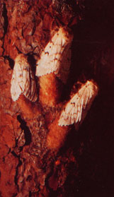

"Portions of Clare, Isabella, Mecosta, Montcalm, and Saginaw Counties," the announcer said, "will be sprayed this spring to control gypsy moths."
Ann was, of course, concerned. But, when she began to search for additional information about the moth control program, she ran into countless red-tape roadblocks. Finally, Ms. Hunt went to the Mount Pleasant, Michigan USDA office . . . where she was told that her family's Ragged Rainbow Farm was, indeed, in the target area . . . and would be sprayed with a chemical pesticide called Dimilin.
The USDA people didn't offer much additional information, but Ann and Phillip Hunt knew that something had to be done. (After all, they earned their living from the sale of "organically" grown products.) To get the ball rollin', the Hunts contacted 30 other folks whose lands also would be affected by the proposed pesticide "bombing". These people met at Ragged Rainbow Farm to prepare a list of questions, which they hoped to present at a May 31 "public meeting" with the Michigan Department of Agriculture (MDA) and the USDA Animal and Plant Health Inspection Service (APHIS).
If the bureaucrats were surprised when their small assembly room suddenly was filled to beyond its seating capacity, they certainly didn't let the evidence of public concern change their plans. Most of the questions that the farmers' group had so carefully prepared went unanswered. Worse yet, the MDA announced that Dimilin would, indeed, be sprayed, and that it would be used on fence-rows, single trees in planted fields, and houseside shrubs . . . as well as in the "uninhabited forests" that the chemical was supposed to protect. Many of the wholistic farmers-who had expected their needs to be at least considered-left the room confused and angry. They weren't ready to give up, however. How could they, when their livelihood depended-in many cases-upon a pesticide-free crop? It was mostly out of desperation that the original group of landowners formed the Citizens Against Chemical Contamination . . . and began to take steps to protect their farms.
In order to prepare for their "campaign", the new organization's members set out to learn all they could about the proposed "insect control" operation. This data was gathered through contacts with the EPA, test results obtained from the pesticide's manufacturer, copies of the MDA's 1978 Gypsy Moth Management Action Plan, and the study of alternate ecologically sound-methods of dealing with the bugs.
The citizens' group picked up members and support as it went along, and its confidence grew. But-on May 11-a second discussion with USDA and MDA officials made the situation seem next to hopeless.
The state and federal spokesmen assured everyone that Dimllin was "completely innocuous", and then announced that there would be no exceptions from the spray program. What's more, the "public servants" stated that alternative control methods would not be considered . . . even if they were used at the landowner's expense and even if that person's way of life was at stake.
To cap off the already unpleasant evening, a lawyer who was present at the time told CACC that it had a "less than ten percent" chance of winning, should the group decide to take the matter before the courts. The farmers were worried, and some went so far as to discuss passive resistance . . . but even this "radical" proposal had an air of futility about it. The landowners were close to being beaten.
One day later, however, the situation took a turn for the better. The Chicago office of the EPA mailed a copy of the Dimilin label to the CACC office. That label-according to government regulations-had the "force and effect of law", and yet it specifically prohibited many of the things that the MDA had planned to do. The identification tag warned, for instance, that Dimilin was harmful to humans and that contamination of foodstuffs should be avoided. The label also listed the substance as a potential environmental hazard, and stated that the pesticide should not be applied to crops . . . or in any area used for food, feed, hay, or pasture.
CACC confronted the state and federal representatives with this information, and were told that an "official expanded label" allowed the MDA to ignore the original warnings. The farmers weren't about to be put off so easily, though. They called the Washington EPA and discovered that the environmental agency was unaware of any "expanded" label . . . and that the APHIS program, itself, was under EPA investigation.
At this point the group had enough evidence to go into action. They hired attorney James Olson, and put the case before Judge Ray Hotchkiss of the Ingham County Circuit Court. As a result of the information presented by the wholistic farmers, Judge Hotchkiss granted a temporary restraining order against the MDA until another hearing could be held on June 1.
As it turned out, however, the matter was pretty much resolved before that second hearing came about. On May 31 the EPA told the Michigan Department of Agriculture that it must follow the regulations contained on the original Dimilin label. This caused the MDA to announce that because of "apparent confusion in the Environmental Protection Agency"the pesticide would not be sprayed in 1978. Judge Hotchkiss held the June 1 meeting as planned, though, and issued a preliminary injunction against the MDA . . . which included an order that the chemical be removed from the state within thirty days. And, perhaps most important of all, the case will remain on the court docket and can be reopened whenever necessary.
Although the Citizens Against Chemical Contamination won this first battle, its members aren't ready to disband just yet. They plan to write an amendment to Michigan state law that will prohibit government use of pesticides on private land unless the property owner is allowed (if he or she chooses) to employ alternative pest control methods first.
This sort of action is expensive, though. The CACC folks have put their farms, businesses, and homesteads on the line, because they want to keep the organization going . . . both to "watchdog" government spray programs and to push for more laws that return control of the land to the people who work it.
If you agree with the CACC's goals, you can help further them by mailing a donation to Citizens Against Chemical Contamination, c/o Farwell State Savings Bank, Farwell, Michigan 48822. Or, better yet, why not join the group: Three dollars a year-addressed to CACC, 11463 Bringold Avenue, Lake, Michigan 48632-will entitle you to a regular newsletter of CACC activities and a complete rundown of the events that led up to the organization's victory in the Dimilin incident. That membership could buy you a whole lot of "health insurance" for your three-buck investment.-Bruce Woods.
That's the question MOTHER recently asked Dr. Charles F. Wurster, associate professor of Environmental Science at the State University of New York at Stony Brook. And Dr. Wurster graciously provided her with this information:
"The gypsy moth situation is what I call an exaggerated insect problem ... blown all out of proportion. The fact of the matter is, the best thing to do about an infestation of these moths is to ignore it!
"You see, these pests have built up a fair complex of natural enemies since their immigration to America . . . birds, rodents, other insects, and diseases. So, after an infestation, the trees leaf out again and there usually won't be another large increase in the moths' numbers for several years . . . because their predators will be more numerous following a large gypsy moth hatch, and diseases will have run rampant through the overblown moth population. Spraying, in fact, often is beneficial to the gypsy moth-though it does kill many individual insects-because it thins the pests out enough to prevent any of their diseases from reaching epidemic proportions. Because of this, the year that follows a spraying, typically, will produce a second outbreak of the pests. Some people, of course, will see this flare-up as reason enough for yet another spraying ... and so the cycle goes on.
"Also, since the `early instars'-the moth's larvae-have generally begun to disperse by the time that second spraying is made, there is a strong possibility that the insecticides help to `select' dispersion as a moth characteristic ... thereby causing the range of the bugs to spread! The entire American population of these insects, for example, was confined to eastern Massachusetts until the first DDT sprayings of the late '40's and early '50's. That `moth control' may well have been responsible for the dispersal of gypsy moths all over the Northeast and it's probably how they got to Michigan in the first place!
"To put it simply, the spraying of gypsy moths is usually the result of `pork barrel' politics . . . congressmen simply use it to bring federal money into their districts. The objective in these programs is profit rather than insect control."
|
|
 |
|